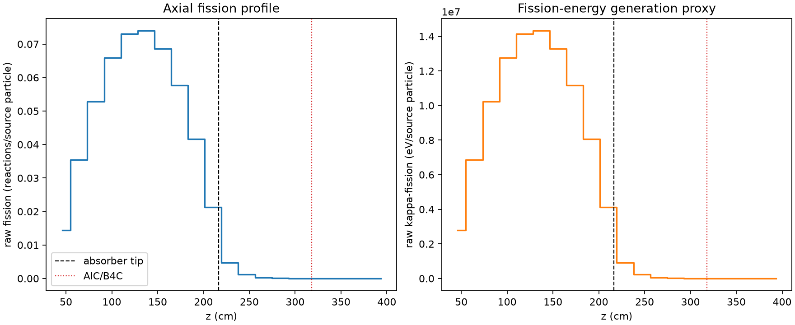
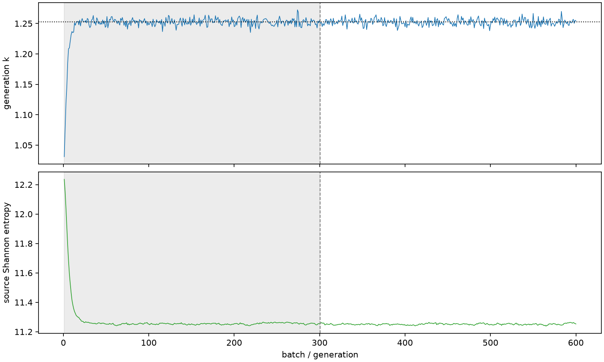

| field | value |
|---|---|
| experiment | V2-STAGE_256_OGRENCI_03-0008 |
| k | 1.2524304771338741 |
| MC standard error | 0.00019913778300033124 |
| seconds | 1066.7403867029934 |
| acceptance | not_assessed |
| convergence | review_required |
Completed is output integrity only; physical and statistical review required. Zero tallies do not prove zero production or zero uncertainty.
| diagnostic | value |
|---|---|
| geometric fuel voxels | 5280 |
| zero fission tally voxels | 683 |
| low signal fuel voxels | 1653 |
| low signal fission share | 8.390948587930451e-05 |
| low signal kappa share | 8.393945576996701e-05 |
| important fission share | 0.9500943680727497 |
| previous filter included | 3627 |
| duration estimate s | 1562.5173488400023 |
| actual minus estimate s | -495.7769621370089 |
| fission relative MC error | statistics |
|---|---|
| all_geometric_fuel | {"voxels": 5280, "positive_mean_voxels": 4597, "zero_mean_voxels": 683, "undefined_relative_error_voxels": 683, "median": 0.012325834757276862, "p95": 0.9579246283097782, "maximum": 1.0000000000000002} |
| low_signal | {"voxels": 1653, "positive_mean_voxels": 970, "zero_mean_voxels": 683, "undefined_relative_error_voxels": 683, "median": 0.6067787154410125, "p95": 1.0, "maximum": 1.0000000000000002} |
| important_95pct | {"voxels": 2316, "positive_mean_voxels": 2316, "zero_mean_voxels": 0, "undefined_relative_error_voxels": 0, "median": 0.007367578567415904, "p95": 0.01171244224649352, "maximum": 0.014438975047673644} |
| outside_previous_filter | {"voxels": 1653, "positive_mean_voxels": 970, "zero_mean_voxels": 683, "undefined_relative_error_voxels": 683, "median": 0.6067787154410125, "p95": 1.0, "maximum": 1.0000000000000002} |
| kappa_fission relative MC error | statistics |
|---|---|
| all_geometric_fuel | {"voxels": 5280, "positive_mean_voxels": 4597, "zero_mean_voxels": 683, "undefined_relative_error_voxels": 683, "median": 0.012311852713613949, "p95": 0.9578317596365975, "maximum": 1.0000000000000002} |
| low_signal | {"voxels": 1653, "positive_mean_voxels": 970, "zero_mean_voxels": 683, "undefined_relative_error_voxels": 683, "median": 0.606815737283813, "p95": 1.0, "maximum": 1.0000000000000002} |
| important_95pct | {"voxels": 2316, "positive_mean_voxels": 2316, "zero_mean_voxels": 0, "undefined_relative_error_voxels": 0, "median": 0.007358740417429453, "p95": 0.011698922882208059, "maximum": 0.014421232515271012} |
| outside_previous_filter | {"voxels": 1653, "positive_mean_voxels": 970, "zero_mean_voxels": 683, "undefined_relative_error_voxels": 683, "median": 0.606815737283813, "p95": 1.0, "maximum": 1.0000000000000002} |
| axial bin | fission share | kappa-fission share |
|---|---|---|
| 1 | 0.02825327981576506 | 0.028254419178087294 |
| 2 | 0.06937379998711855 | 0.0693735008103187 |
| 3 | 0.10334882093402237 | 0.10334837148993378 |
| 4 | 0.1289349043945654 | 0.12893390448219103 |
| 5 | 0.14299570440435105 | 0.14299490153863728 |
| 6 | 0.14460942194712909 | 0.1446083686923188 |
| 7 | 0.13415007135071885 | 0.13414915745740577 |
| 8 | 0.11281254452277659 | 0.11281160107448612 |
| 9 | 0.08135955169800921 | 0.08135889823631401 |
| 10 | 0.041735584167874665 | 0.04173652567562445 |
| 11 | 0.00931079433428748 | 0.009313760285774424 |
| 12 | 0.002336411717424906 | 0.002337217418725246 |
| 13 | 0.0005906916580925299 | 0.0005908853253427928 |
| 14 | 0.0001427680023395397 | 0.00014282033599378514 |
| 15 | 3.5415727530031694e-05 | 3.54299480332443e-05 |
| 16 | 8.50988904054529e-06 | 8.512282076992827e-06 |
| 17 | 1.2996783246537468e-06 | 1.3000053181812655e-06 |
| 18 | 2.797493961239085e-07 | 2.798021296133675e-07 |
| 19 | 1.4575934888872192e-07 | 1.4569969040119454e-07 |
| 20 | 2.618841932512344e-10 | 2.6159798498937577e-10 |
Histories include the inactive-to-active transition at batch 300. kappa-fission approximates fission energy production, not total heat deposition.

